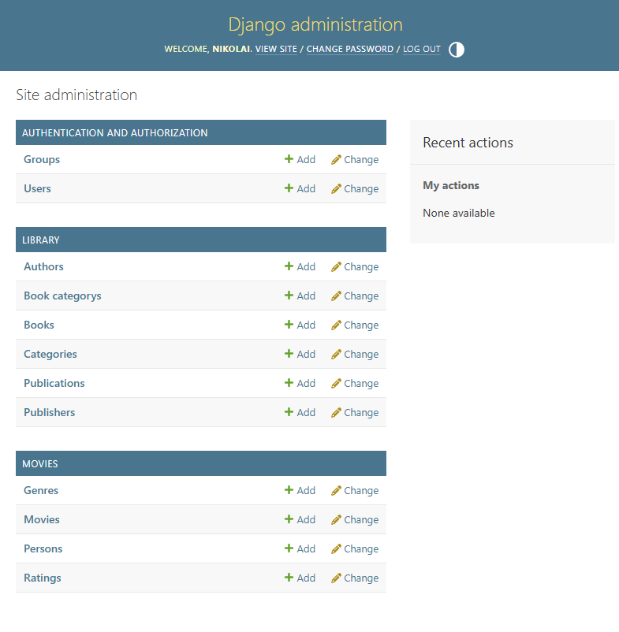
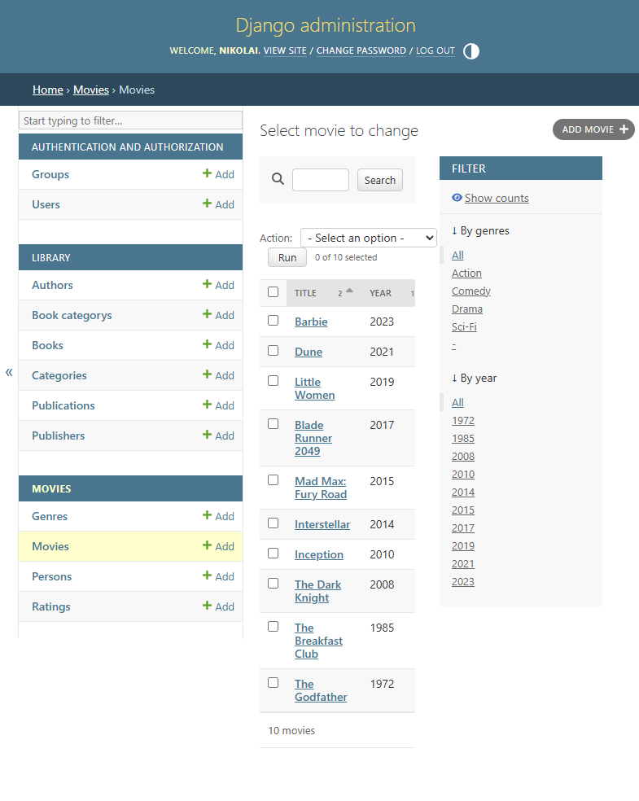
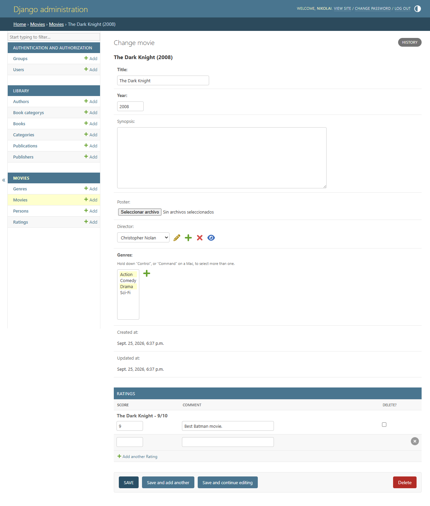
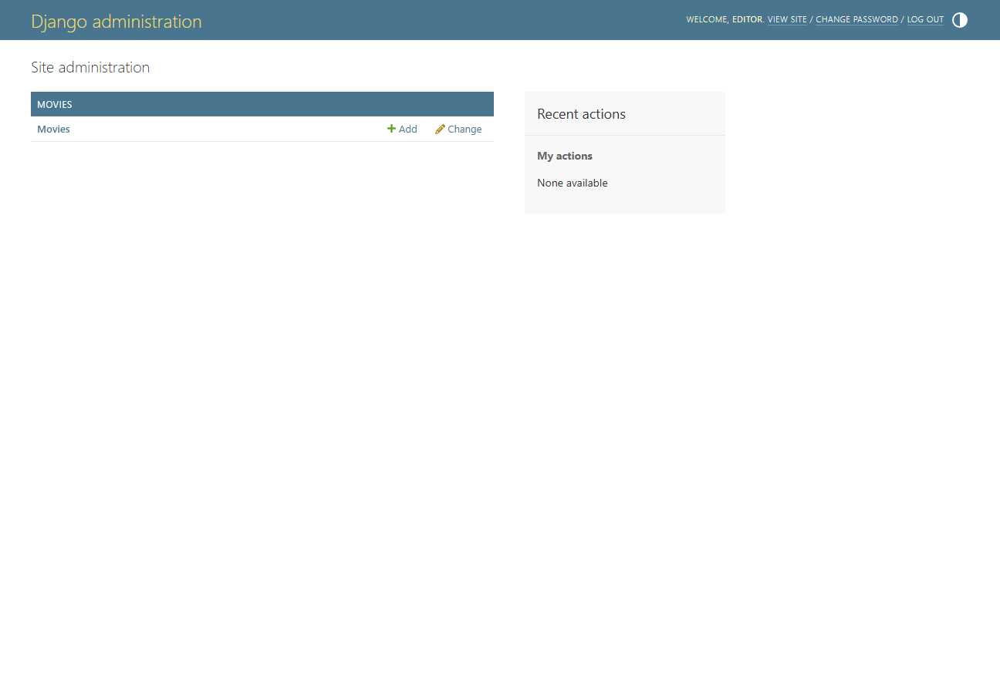
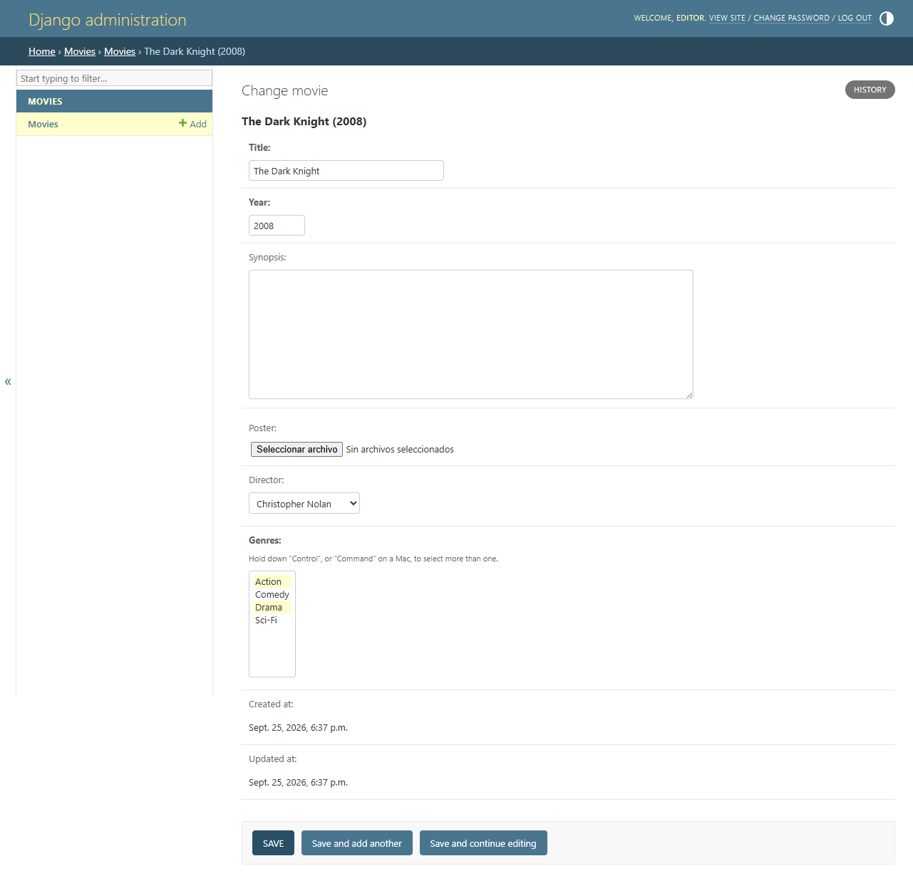
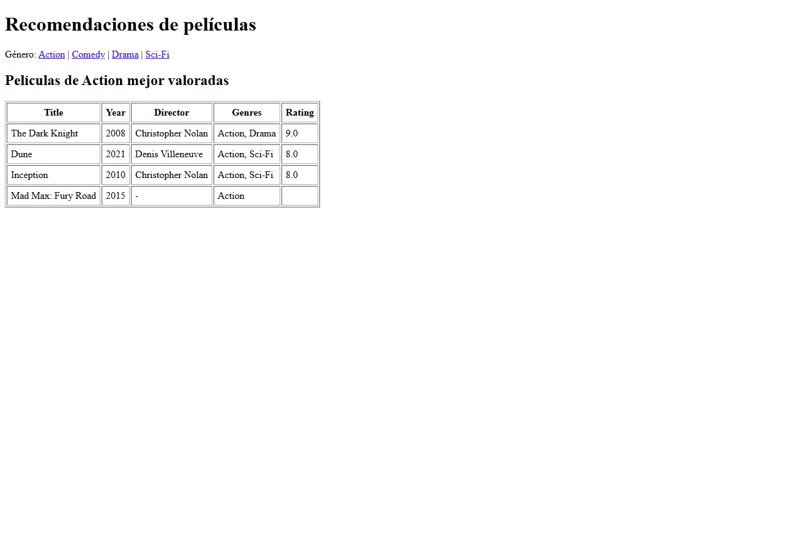

Alumno: Nikolai Suarez
Correo: nikolai.suarez@tecsup.edu.pe
Repositorio: https://github.com/nikolaisuarez-gif/Proyecto_Django_Suarez.git
Curso: Desarrollo de Aplicaciones Empresariales

Columnas Title/Year, filtros por género y año, y búsqueda por título.

Las valoraciones se dan de alta dentro del registro padre; created_at y updated_at aparecen sin campo editable.



Películas del mismo género ordenadas por mejor valoración: /movies/recommendations/<genre_id>/

| Resultado | Detalle |
|---|---|
| Modelos | Movie, Genre, Person, Rating (Movie↔Genre M2M, Rating→Movie FK) |
| Migración | movies/0001_initial.py aplicada |
| Admin | 4 modelos registrados + ModelAdmin + RatingInline + campos de auditoría solo lectura |
| Datos | 10 películas, 4 géneros, 6 ratings (seed_movies) |
| Permisos | Grupo editores: add_movie + change_movie, sin delete_movie; usuario editor |
| Tests | py manage.py test movies → 5 tests OK |
| Vista | recommendations pública, ordenada por promedio de ratings |
Superusuario: nikolai / admin12345 | Editor: editor / editor12345